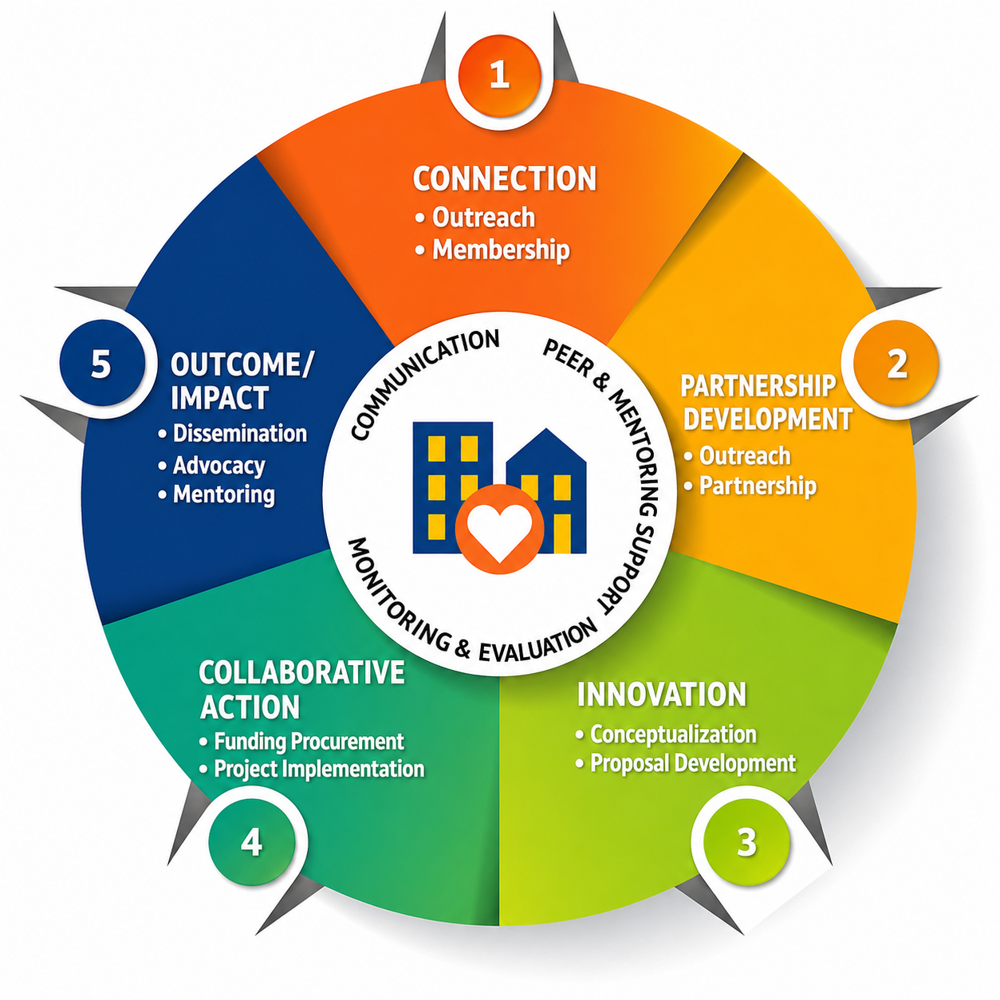

Facilitating community-campus research partnerships for health.
Health inequalities exist across Baltimore City and disproportionately affect minority communities. One-sided approaches designed to address these challenges are often ineffective, and Morgan CARES is about community power and input. We invite you to join our network of diverse and innovative stakeholders, to work together on issues that directly impact our communities. By joining, you have the opportunity to access mentorship, technical assistance, capacity-building opportunities, and seed funding.
Morgan CARES is a hub for community and academic leaders to connect and form long-lasting partnerships. We foster strong community-campus relationships, producing collaborative projects that promote health parity. Morgan CARES focuses on integrating community needs and perspectives into all stages of research. By working together to increase understanding and awareness of health disparities, the knowledge gained will lead to solutions that positively benefit community residents. This process is what drives our work, and it is known as Community-Based Participatory Research (CBPR).
The Morgan CARES Model has been designed as a framework for conducting Community-based Participatory Research (CBPR). It provides a structure for developing a well-aligned community engagement and partnership approach. This model follows a multi-stage process. It is a measurable tool to track achievements and to assess long-standing CBPR partnership success for any given project.

Read more about our model here.
Members are affiliated with the Morgan CARES Network and participate in an exchange of resources and information. They receive regular communications about training, funding opportunities, and events.
Submit the Network Registration FormAre you an existing member of the network who wants to take your engagement to the next level? Consider becoming a Partner! Partnership means that you are committed to community-engaged health initiatives. A primary goal of the work of Morgan CARES is to facilitate new connections and support community-campus partnerships that promote health in Baltimore City. To accomplish this, we are launching a new program called PartnerLink!
After submitting the Network Registration Form, individuals who opt-in will create a profile and share information such as their affiliation, title/position, bio, headshot, and preferences for a new partner. The profiles will be viewable on the Partnering with Morgan CARES page so that potential collaborators can find one another. With matching software, the Morgan CARES team can use the profile information provided to introduce individuals with complementary skills and interests.
We host “Happy to Help You” Hours twice weekly, on Mondays 3:00–4:00pm and Thursdays 9:30–10:30am, if you would like to workshop a project idea, discuss Seed Funding application requirements, or think together about potential partners that would be a good fit.
Schedule a 20-Minute SessionThe Morgan CARES Seed Funding Program includes two different funding opportunities:
Intended to support community-campus collaborations. The goal is to strengthen partnerships between community-based organizations or groups, and members of academia at Morgan State University.
Learn more →Intended to support collaborative teams exploring a practice-related challenge (such as patient access to an existing service or cost-effectiveness of a program) and devising/testing a solution.
It is the hope that these awards facilitate the emergence of responsive, community-led public health initiatives that promote health equity across Baltimore City communities. New partners may engage in supportive activities and training for as long as they wish to forge a strong partnership before submitting an application. Partners who have existing collaborations may also apply.
Applications are accepted on a rolling basis and are reviewed quarterly. See our Seed Funding Program page for program descriptions, eligibility criteria, and more details.
The Morgan CARES Community Center is housed at the Hoen & Co. Lithograph Campus located at 2101 E. Biddle Street, Stone Building, Suite 1204, Baltimore, Maryland 21213. Morgan CARES opened the doors of its Community Center in 2020 amid the COVID-19 pandemic, and since then it has been used by various Network members for meetings, training sessions, presentations, and so much more. We hosted over 200 sessions in the facility during the first two years of operation, and we have been able to collaborate with countless community and academic partners.
In addition to these programs and services, Morgan CARES also served as the Central Office for the International Collaboration for Participatory Health Research until 2026. It currently houses the East Baltimore NAMI Metro Baltimore East Baltimore hub and is a site for HopeWell Cancer Support programming.
Please feel free to send us an email to learn more about our facility. Members of the Network are eligible to reserve space in the Community Center to support community engaged programming and research activities. To request use of the space, complete the Space Reservation Request Form.
Learn more about our work at Morgan CARES:
Learn about the Morgan CARES Steering Committee and team
Discover the many ways you can collaborate with Morgan CARES, community members, and/or organizations
Receive information about the Morgan CARES funding opportunities
Get involved with the many training opportunities hosted by Morgan CARES
Learn about existing resources for community and academic partners
Find the best ways to stay in touch with the Morgan CARES team